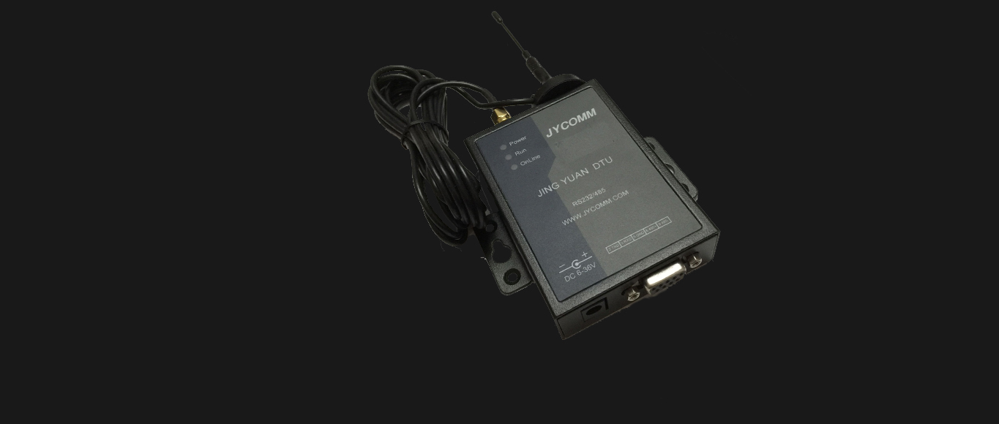
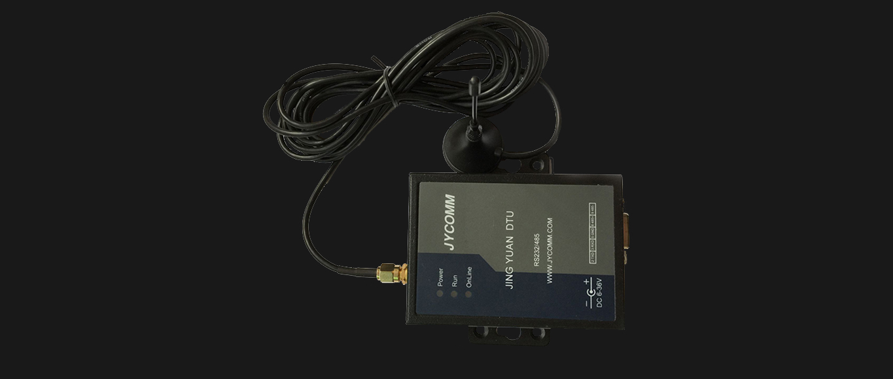
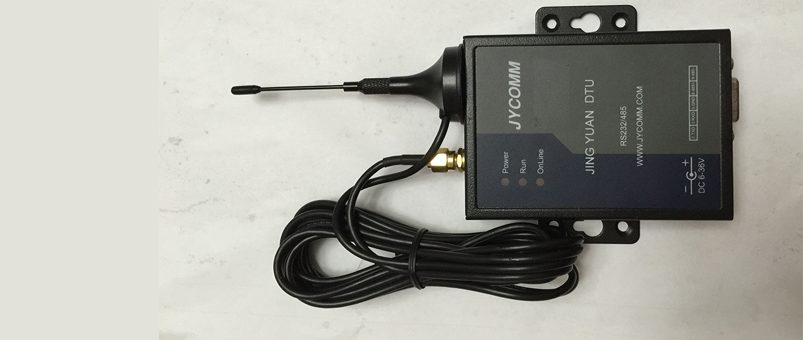
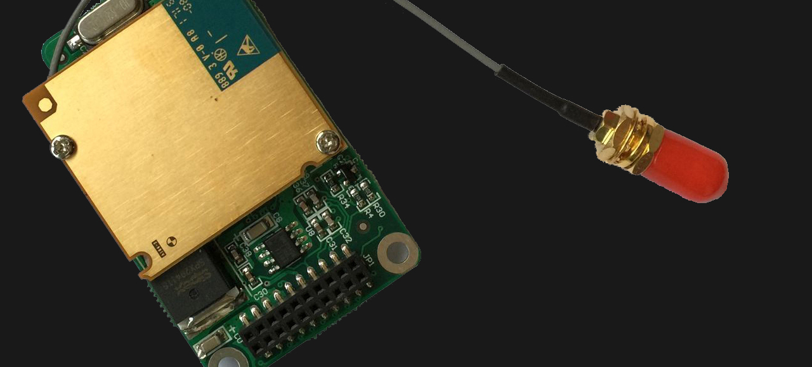

JYC311A6短信DTU内嵌高性能单片机，双重看门狗电路设计，有效防止假死现象，免维护。
JYC311短信DTU设备内嵌短信编解码模块，支持TEXT、PDU方式短信的透明收发，支持长短信收发。二次开发API有c#,java,易语言，delphi，VB等。
应用于
上海世博会
JYC331A0 GPRS 短信DTU
采用西门子无线模块，集成自主开发TCP/IP协议栈，内嵌TCP，UDP，DNS等协议，采用独有4字节ID协议，支持互联网中心的数据交换，无需静态IP。兼容宏电GPRSDTU，桑荣GPRSDTU，可方便接入组态王，世纪星等组态软件。
设备内嵌短信编解码模块，支持TEXT、PDU方式短信的透明收发，支持7bit，8bit，UCS2编码方式，中心工作模式和终端工作模式可工选择，终端模式下可对多个目标发送短信。
串口多数据包缓冲功能，在没有联网时收到的数据在入网后可全部进行发送。
支持短信配置设备参数，短信读取设备运行情况。
支持二次开发，提供开发包。

JYC331B1 GPRS 短信DTU
采用西门子无线模块，集成自主开发TCP/IP协议栈，内嵌TCP，UDP，DNS等协议，采用独有4字节ID协议，支持互联网中心的数据交换，无需静态IP。兼容宏电GPRS DTU，桑荣GPRS DTU，可方便接入组态王，世纪星等组态软件。
设备内嵌短信编解码模块，支持TEXT、PDU方式短信的透明收发，支持7bit，8bit，UCS2编码方式，中心工作模式和终端工作模式可工选择，终端模式下可对多个目标发送短信。
串口多数据包缓冲功能，在没有联网时收到的数据在入网后可全部进行发送。
支持短信配置设备参数，短信读取设备运行情况。
支持二次开发，提供开发包。

JYC221A6 GPRS DTU
采用西门子无线模块，集成自主开发TCP/IP协议栈，内嵌TCP，UDP，DNS等协议，采用独有4字节ID协议，支持互联网中心的数据交换，无需静态IP。兼容宏电GPRS DTU，可方便接入组态王，世纪星等组态软件。

采用西门子无线模块，集成自主开发TCP/IP协议栈，内嵌TCP，UDP，DNS等协议，采用独有4字节ID协议，支持互联网中心的数据交换，无需静态IP。兼容宏电GPRS DTU，桑荣GPRS DTU，可方便接入组态王，世纪星等组态软件。
设备内嵌短信编解码模块，支持TEXT、PDU方式短信的透明收发，支持7bit，8bit，UCS2编码方式，中心工作模式和终端工作模式可工选择，终端模式下可对多个目标发送短信。
串口多数据包缓冲功能，在没有联网时收到的数据在入网后可全部进行发送。
支持短信配置设备参数，短信读取设备运行情况。
支持二次开发，提供开发包。